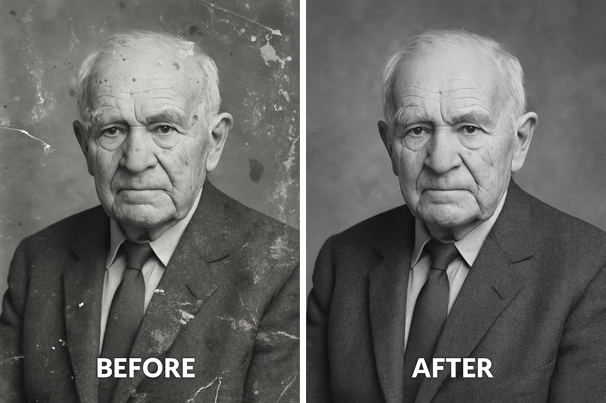

🧪 Module 12: Projects & Assignments
🎯 Objective:
Reinforce Photoshop skills through real-world projects that integrate core concepts including layers, masking, retouching, typography, smart objects, and export techniques.
📌 Project 1: Poster Design (Event / Movie)
🎯 Goal:
Create a visually compelling poster for an event or fictional movie using layered images, text, and effects.
🛠 Tools Used:
- Move Tool (V)
- Text Tool (T)
- Pen Tool (P)
- Brush Tool (B)
- Adjustment Layers
- Layer Masks
- Filters (Gaussian Blur, Gradient Map)
🔧 Steps:
- Create a new file (A3 size: 297×420 mm, 300 DPI).
- Add a gradient or photo background.
- Place a cut-out subject using Select Subject + Layer Mask.
- Add title, date, location, and tagline.
- Use Layer Styles for shadows and glows.
- Apply Gradient Map or Color Lookup for tone.
- Export as PSD and JPG (print-ready).
📦 Output:
- 1 Print-ready poster (JPG 300dpi)
- 1 Editable PSD file
📌 Project 2: Photo Restoration
🎯 Goal:
Restore an old damaged photo using retouching and repair tools.
🛠 Tools Used:
- Spot Healing Brush Tool (J)
- Clone Stamp Tool (S)
- Patch Tool
- Dodge/Burn Tool
- Adjustment Layers
🔧 Steps:
- Open a scanned damaged photo.
- Duplicate the layer (Ctrl + J).
- Use Spot Healing and Patch Tool to fix blemishes.
- Repair tears with the Clone Stamp Tool.
- Adjust tone using Levels or Curves.
- Sharpen with Unsharp Mask or Smart Sharpen.
📦 Output:
- Before & After comparison image
- Final Restored Image (JPG + PSD)
📌 Project 3: Social Media Banner
🎯 Goal:
Design a clean, engaging banner for Instagram/Facebook with branding.
🛠 Tools Used:
- Shape Tool
- Text Tool (T)
- Smart Objects
- Gradient Tool (G)
- Export for Web
🔧 Steps:
- Create canvas (1080×1080 px or 1200×628 px).
- Use gradient or brand background.
- Add product/model image with shadows.
- Design bold text layout for the message.
- Add logos or social icons.
- Export for web (Ctrl + Alt + Shift + S).
📦 Output:

- 1 Square and 1 Landscape banner
- Editable PSD + Optimized PNG/JPG
📌 Project 4: Digital Painting (Brush + Tablet)
🎯 Goal:
Create a digital painting (e.g., landscape or character) using brush tools.
🛠 Tools Used:
- Brush Tool (B)
- Smudge Tool
- Mixer Brush Tool
- Layers & Masks
- Pressure-sensitive tablet (optional)
🔧 Steps:
- Sketch outline with basic brush.
- Block base colors on new layers.
- Blend with soft brushes or smudge tool.
- Add details and highlights.
- Refine lines and polish edges.
📦 Output:
- Final digital art in PSD & high-res PNG
- Optional: Time-lapse screenshots
📌 Project 5: Business Card or Logo Design
🎯 Goal:
Design a professional business card or logo for a brand.
🛠 Tools Used:
- Shape Tool
- Pen Tool (P)
- Text Tool (T)
- Alignment Tools
- Artboards
🔧 Steps:
- Create a 3.5×2 inches canvas at 300dpi.
- Design logo with shapes or Pen Tool.
- Add business details with proper typography.
- Align elements using guides and tools.
- Export: PNG (logo), PDF (card), PSD.
📦 Output:
- 1 Business Card (Print-Ready PDF)
- 1 Logo (Transparent PNG + Vector PSD)
📌 Project 6: Magazine Cover Mockup
🎯 Goal:
Design a creative cover for a fashion, tech, or lifestyle magazine.
🛠 Tools Used:
- High-res Image
- Text Tool
- Shape Tool
- Guides/Rulers
- Layer Effects
🔧 Steps:
- Canvas size: A4 (210×297mm, 300dpi).
- Set cover photo as full-size background.
- Add bold magazine title and subheadings.
- Include barcode and stylized elements.
- Apply color grading and shadows.
📦 Output:
- Final Magazine Cover (JPG + PSD)
- Optional: Flat & Mockup Version